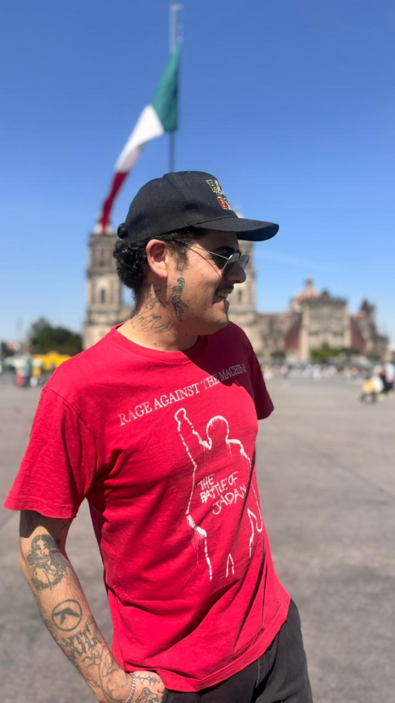
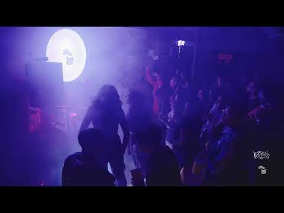
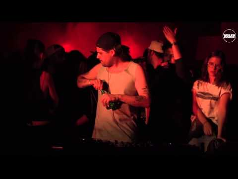
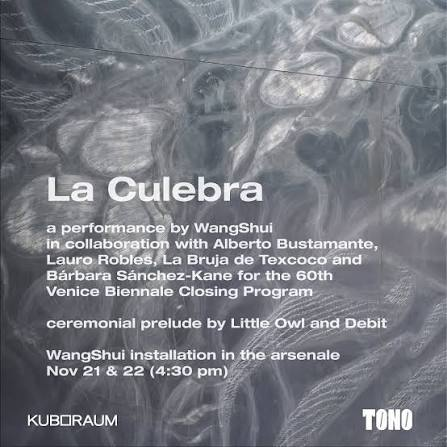
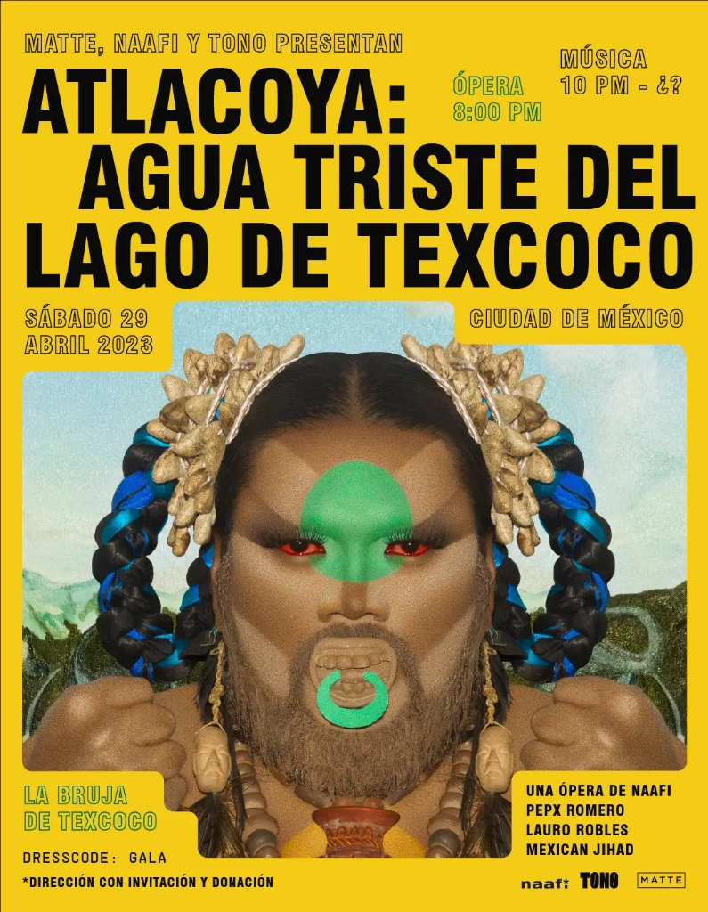
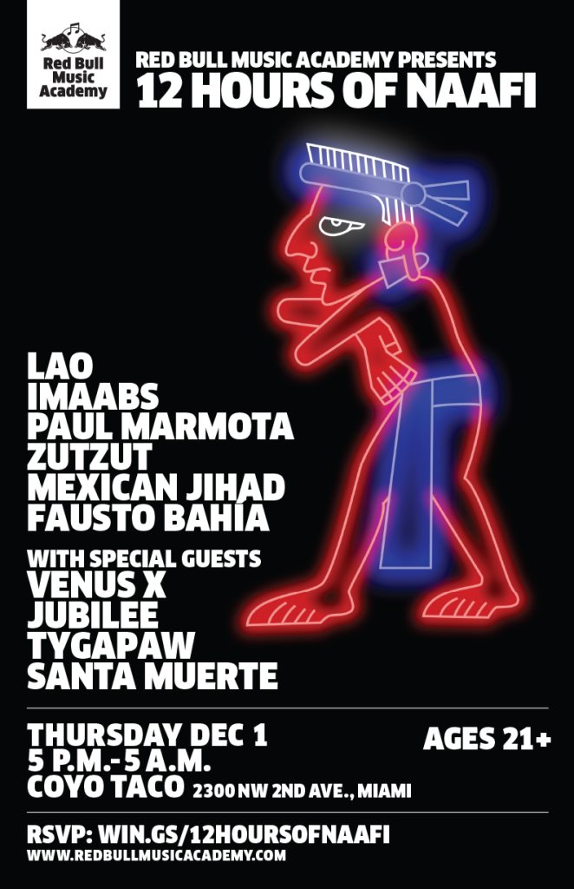
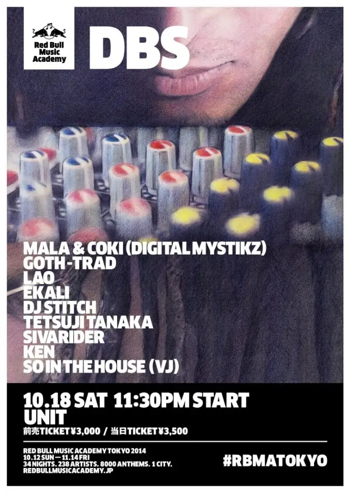

Perímetro exterior de la placa base. Zona de tiempo desintegrado, Xibalba y corrientes Lemurianas.
Generador de drones microtonales gobernados estrictamente por las 5 Sizigias del Numograma (CCRU). Las parejas gemelas siempre suman 9 (Aritmética Digital Lemuriana).
Canal Lemuriano sub-acuático. Portador de frecuencias graves estables (54Hz) entrelazadas con resonancia armónica de 72Hz.
.---. [ CHRONO-PORTAL: OPEN ]
/ \ FREQ: 36.00 Hz (UTTRUNIX)
| () () | WARP RATIO: 1.618:1
\ ^ / STATUS: NON-ORGANIC
'---' ZONE: ABYSSAL ZERO
Vórtice temporal liminal. En la cosmología CCRU, la Sizigia 0::9 Uttrunix marca el umbral del cero absoluto, donde los bucles de tiempo retrocausal devoran la cronología cartesiana.
┌──────────┐ [ KIN COMPUTATION ENGINE ]
│ ◈ OLLIN │ CICLO: 260 DÍAS SAGRADOS
│ (≋≋≋≋) │ VECTOR: 4::5 KATAK (40Hz)
└──────────┘ NAHUAL: CUAUHTLI / ÁGUILA
Sincronizador cronográfico mesoamericano articulado con modulación por ancho de pulso. Calcula el KIN cósmico y emite pulsos tonales inspirados en los silbatos de la muerte y teponaztlis rituales.
[00] Murrumur (1::8) [04] Katak (4::5)
[01] Djabbath (3::6) [05] Uttrunix (0::9)
[02] Kipphor (2::7) [06] Barker Matrix
>> 34 DEMONIC CHRONO-CURRENTS DECODED
Archivo criptográfico de la teoría de hiperstición del Dr. Daniel Barker y Nick Land (CCRU Warwick, 1995-1999). Intersección entre esquizofrenia cultural, ingeniería de tráfico sonoro y demonología digital.
▓█████████████▓ [ 9 UNDERWORLDS ]
░░▓▓███████▓▓░░ SUB-INFRA: 28.4 Hz
░░░▓▓█▓▓░░░ MICTLAN SOUNDSYSTEM
░░░░░░░░ VOID INTENSITY: 99%
Extremo profundo sudeste del PCB. Cámara de resonancia infasónica que evoca los 9 niveles del inframundo mesoamericano. Desestabiliza transitoriamente la rejilla electromagnética del navegador.

LAURO ROBLES (LAO / CDMX)
Siren Cycle Press Archive / Extasis Records Founder & A&R / NAAFI Co-Founder (2010–present).
Lauro Robles (LAO) es un productor musical, DJ, curador sonoro y desarrollador DSP originario de la Ciudad de México. Co-fundador de NAAFI (2010 a la fecha) y fundador, director y A&R de Extasis Records y Baby Thug.
Pionero desde 2004 en la mutación de la música de club latinoamericana, deconstruyendo corrientes territoriales (tribal guarachero, reggaetón, raptor house, dembow, baile funk y percusión prehispánica) a través de la lente del grime, dubstep, IDM y el bass music internacional.
Su obra abarca desde la producción de himnos seminales para club hasta la dirección musical de ópera experimental en Festival TONO (2023) y la 60ª Bienal de Venecia (2024) en los Arsenales históricos, además de la autoría de software e instrumentos de síntesis para la comunidad global.
// FESTIVALES & GIRAS INTERNACIONALES (26+ HITOS)
- 2024 • Venecia, Italia 60ª Bienal de Venecia (Arsenale / Teatro alle Tese)
- 2023 • Austin, Texas Club Eternal (Nikki Nair & Lao)
- 2023 • Brooklyn, NYC The Lot Radio Live Session (Rendezvous with Lao)
- 2023 • Ciudad de México Festival TONO (Museo Anahuacalli - Atlacoya)
- 2023 • Ciudad de México Resident Advisor CDMX Showcase
- 2019 • Ciudad de México Sónar México (Parque Bicentenario)
- 2019 • Tokio, Japón Circus Tokyo (LAO & Nick Hook Japan Tour)
- 2019 • Taipéi, Taiwán FINAL Taipei (Headliner Club Night)
- 2019 • Shenzhen, China OIL Club (Boiler Room China x OIL)
- 2019 • Beijing, China ALL Beijing / Club Night & Tour Run
- 2018 • Ciudad de México MUTEK México (Edición 15 - Nocturne 1)
- 2017 • Montreal, Canadá MUTEK Montréal (SAT - NAAFI Showcase)
- 2017 • Barcelona, España Sónar Barcelona (SónarDome - Cierre Oficial b2b NAAFI)
- 2017 • Seúl, Corea del Sur Cakeshop Seoul & Seoul Community Radio (SCR)
- 2017 • Tokio, Japón Circus Tokyo (Asia Tour 2017 w/ Wrack)
- 2017 • Shanghai, China Elevator Shanghai (Genome 6.66 Mbp presents LAO)
- 2017 • Berlín, Alemania Berghain (Säule VIII — Lao, Mexican Jihad, Dinamarca)
- 2016 • Cracovia, Polonia Unsound Festival (Hotel Forum)
- 2016 • Berlín, Alemania CTM Festival (Halle am Berghain)
- 2016 • Barcelona, España TRILL @ Sala Razzmatazz (TRILL x NAAFI Squad)
- 2016 • Bordeaux, Francia Plage Club x LAO @ Iboat
- 2016 • Barcelona, España Boiler Room x System: Barcelona
- 2016 • Puerto Escondido Boiler Room Puerto Escondido (NAAFI Showcase)
- 2015 • Barcelona, España Sónar Barcelona (SónarDome - Debut Catedral EP en solitario)
- 2015 • Ciudad de México Boiler Room Mexico City (NAAFI Showcase)
- 2014 • Tokio, Japón Red Bull Music Academy Tokyo (Daikanyama UNIT)
// TERRITORIOS Y CIUDADES VERIFICADAS (60+ CIUDADES)
Ciudad de México (HQ / Chapultepec), Tijuana, Monterrey, Guadalajara, Puebla, León, Oaxaca, Puerto Escondido, Ciudad Juárez.
Nueva York, Los Ángeles, Chicago, San Francisco, Atlanta, Austin, Houston, Dallas, Denver, Portland, San Diego, Fresno, El Paso, Des Moines, Toronto, Montreal.
Berlín, Barcelona, Madrid, París, Londres, Venecia, Ámsterdam, La Haya, Viena, Cracovia, Zúrich, Ginebra, Berna, St. Gallen, Lyon, Grenoble, Bordeaux, Turín, Milán, Porto, Lisboa.
Asia: Tokio, Osaka, Seúl, Taipéi, Shenzhen, Shanghai, Beijing, Hong Kong, Nueva Delhi.
Sudamérica: Bogotá, Medellín, Lima, Oxapampa, Santiago de Chile, Buenos Aires, Montevideo.



Performance ceremonial de clausura por WangShui y Alberto Bustamante. Música por LAO y La Bruja de Texcoco, vestuario de Bárbara Sánchez-Kane.

Diseño sonoro multicanal en el patio central del Museo Diego Rivera Anahuacalli. Cruzando ritual mesoamericano con síntesis sub-bajo.
Cerámica Sónica & Electrónica Prehispánica.

Red Bull Music Academy & Sangre.

Residencia artística internacional. Grabaciones y presentación oficial compartiendo cartel con pioneros del dubstep y bass music.
Proyecto curatorial e investigación cartografiando los nodos sonoros y la resistencia cultural mexicana junto a Alberto Bustamante.
Transformación radical del canon de clubbing global. A&R en Extasis Records, co-fundación de NAAFI, curaduría de lanzamientos, dirección musical y presentaciones en Berghain, Sónar y Boiler Room.
Diseño sonoro y scoring cinematográfico comisionado: Tequila Don Julio ("Por Amor" - Diageo), Cerveza Victoria, Corona y Grupo Herdez.
PLUGINS & REPOSITORIOS C++ (@laurorobles)
Herramientas de audio digital programadas en C++ / JUCE. Haz click para ver README completo, capturas de pantalla y especificaciones DSP:
FM Donk & Guaracha Bass Synth Workstation (Yamaha TX81Z LatelyBass + Punch moderno, Sub-bass y Click transient).
Caja de ritmos polirrítmica 12-canales con emulación de crunch SP-1200 (12-bit ADC), exportación Drag-to-DAW y auto-tagging FFT.
Ecosistema generativo de 6 voces con Wavefolding ADAA sin aliasing, simulación de Vactrol (Buchla 292) y matriz euclidiana Bjorklund.
Sintetizador físico-modal de marimba tradicional mexicana (Chiapaneca / Oaxaqueña) con resonancia armónica de tubos de madera.
Síntesis modal percusiva para graves profundos de Amapiano y Latin Club con saturación no-lineal y decay envolvente.
Analizador espectral en tiempo real, sonograma y goniómetro estéreo para mezcla y masterización de precisión en frecuencias bajas.
Playlist de enseñanza y técnicas avanzadas en Ableton Live. Deconstrucción rítmica, diseño de sonido y síntesis.
Playlist con demos e instrucciones para utilizar las librerías oficiales de sonido y herramientas de producción publicadas en Gumroad.
SERVICIOS DE ESTUDIO (CHAPULTEPEC, CDMX)
Composición original para cine y publicidad. Mezcla crítica por stems y pulido de transitorios.
Diagnóstico de mezclas, flujo de trabajo en Ableton Live y síntesis modular.
 PERFORMANCE
PERFORMANCE
Registro en vivo del performance de clausura en el Arsenale.
 PERFORMANCE
PERFORMANCE
Registro en vivo del performance de clausura en el Arsenale.
 48:20
48:20
Presentación histórica en el epicentro de la música electrónica de vanguardia en China meridional.
 59:44
59:44
Sesión en directo desde Greenpoint, Brooklyn: deconstrucción polirrítmica, edits de club y frecuencias graves.
 LIVE
LIVE
Colisión sónica en vivo entre Gaika (UK) y Lauro Robles durante la residencia Club de Playa NAAFI.
 FESTIVAL
FESTIVAL
Grabación en vivo desde el escenario principal del Festival Comunite explorando ritmos sincopados y bass híbrido.
 MIX
MIX
Curaduría experimental por Lauro Robles para el archivo cultural Satélite en la Ciudad de México.
Sesión exclusiva en vivo desde el quiosco de Greenpoint, Brooklyn: deconstrucción de club y edits inéditos.
[ RECOMBINADOR // MAYA, NAHUA, CCRU & TOPY ]
Generador de cut-ups a la Burroughs cruzando mitología mesoamericana y cibernética:
ZONAS LIMINALES & NET-ART
Navega directamente a los cuadrantes no documentados de la placa de circuitos:
CONTACTO DIRECTO & BOOKING
Para scoring, comisiones artísticas, mezclas y presentaciones en vivo:
laurorobles@gmail.comTRANSMISIÓN TOPY / AUSTIN OSMAN SPARE: Ingresa una declaración de voluntad o deseo. El algoritmo elimina vocales y consonantes duplicadas, forjando un sigilo geométrico vectorial único para activar el trance.
Dos décadas desafiando la hegemonía de la música electrónica anglosajona desde la Ciudad de México.
A través de perfiles y ensayos en Crack Magazine, Resident Advisor, El País, Complex, PAPER y DIS Magazine, la obra de Lauro Robles (Lao) se documenta como eje de la descolonización del clubbing contemporáneo: desde la reivindicación radical del tribal guarachero y la fundación de NAAFI hasta la dirección y A&R de Éxtasis Records.
Charla en profundidad sobre el método de producción, deconstrucción rítmica en Ableton Live, síntesis FM y la evolución del club underground en México y América Latina.
Registro histórico de la noche en la sala experimental Säule del mítico templo berlinés, fusionando bass experimental latinoamericano y clubbing europeo.
Entrevista tras la histórica presentación en solitario de 'Catedral EP' en el SónarDome (Red Bull Music Academy), abriendo brecha definitiva para la electrónica mexicana en Europa.
Mapeo satelital y telemetría de presentaciones en Berghain (Berlín), Sónar (Barcelona), Red Bull Music Academy (Tokio), MUTEK Montreal, MoMA PS1 Warm Up (NYC), CTM Festival, Boiler Room (CDMX/Londres), ALL (Shanghái) y Circus (Tokio).
Perfil extenso sobre Lauro Robles y la génesis estética de NAAFI: cómo un colectivo independiente de la Ciudad de México transformó las pistas de baile y festivales de todo el planeta.
Entrevista y sesión retrospectiva que mapea dos décadas de producción, diseño sonoro modular y activismo de clubbing independiente en recintos subterráneos.
Ensayo y entrevista seminal sobre la aceleración del tribal guarachero, la resistencia cultural y el nacimiento de las fiestas periféricas que redefinieron la noche en México.
Reportaje central sobre el colectivo NAAFI, con enfoque en Lauro Robles como co-fundador, productor y arquitecto sonoro del sonido de club latino a nivel global.
Crónica conmemorativa de 10 años explorando cómo el trabajo pionero de Lao redefinió el canon de la música electrónica latinoamericana contemporánea.
Cobertura periodística del impacto internacional del clubbing mexicano, la presentación en Sónar Barcelona y la ruptura con los cánones hegemónicos europeos.
Charla curatorial y sesión sonora analizando las mutaciones polirrítmicas entre el Caribe, el Río de la Plata y las pistas clandestinas de la CDMX.
Extensa entrevista por Cedar Pasori donde Lao desmenuza la génesis de NAAFI, la descentralización de la electrónica anglosajona y el auge del clubbing clandestino.
Reportaje sobre cómo la estética visceral de Lao y el movimiento de club latino quebraron la hegemonía europea en los festivales de vanguardia.
Crónica del desembarco en Japón: intercambio transpacífico entre los clubes de Shibuya, el clubbing de Tokio y la cadencia de la Ciudad de México.
Ensayo teórico fundamental sobre la compilación de Tribal Guarachero y la reivindicación de ritmos periféricos acelerados hacia el circuito de arte contemporáneo.
Análisis curatorial de los 8 cortes esenciales de NAAFI con especial énfasis en las producciones y remezclas clave de Lauro Robles.